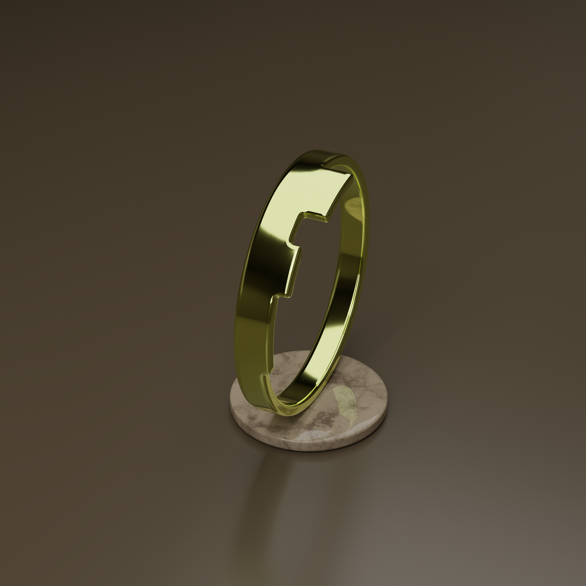
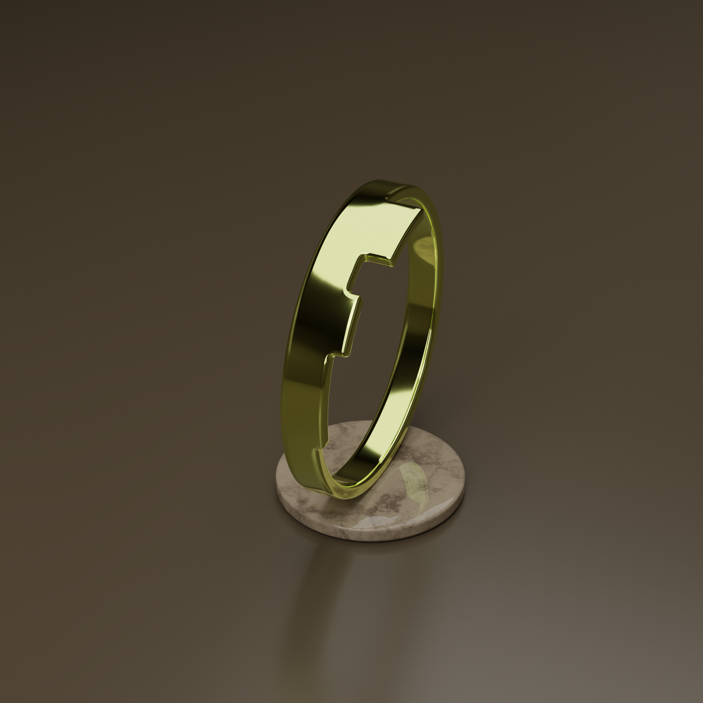

LowPolygonal/GameReady "Flashbang grenade"
A low-poly model of the grenade ,on which most of details are baked on texture. Perfectly optimized for real-time use, such as in video games or virtual reality applications .
Few more examples of my works/renders
 



LowPolygonal "PICKUP"
A low-poly pickup truck is a 3D model created with minimal polygons while preserving essential details and shape. Unlike more detailed models, low-poly are lightweight and optimized for real-time use, such as in video games, websites or virtual reality applications .
"Bullshark" 3D-LOGO
A 3D-logo developed for website of marketimg company. Later it was also animated and used as a marketing company.
LowPolygonal/GameReady "Pipes"
A low-poly model, on which most of details are baked on texture. Perfectly optimized for real-time use, such as in video games or virtual reality applications .
"Geese and Ducks"
3D-Models that visualize a commercial project for the production of rubber inflatable circles.

EDVARD FAFENROT
HI. I am a graphic designer. I am as well specialised in front end web design and user experience. Throughout my career, I have worked with companies of all shapes and sizes that enriched my experience. Also I’m a passionate 3D designer with global experience, I’ve worked in several countries, collaborating with diverse teams in international companies. My journey is a blend of creativity, technical expertise, and cultural exploration.